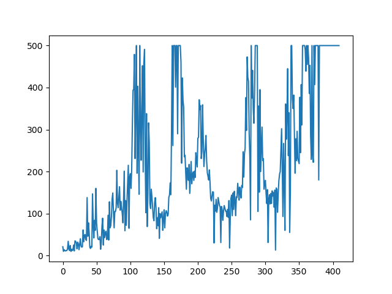
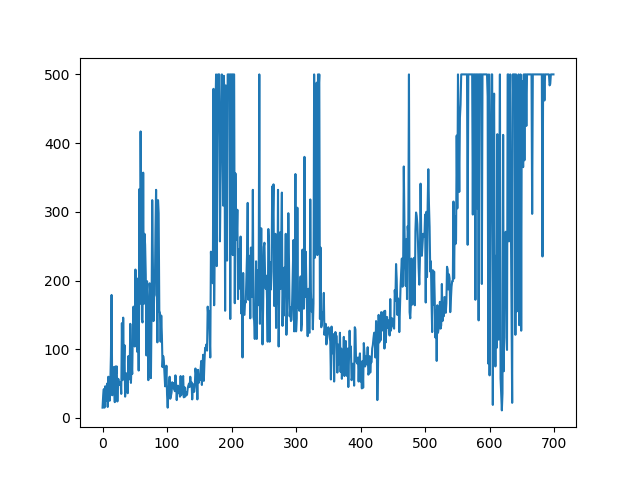
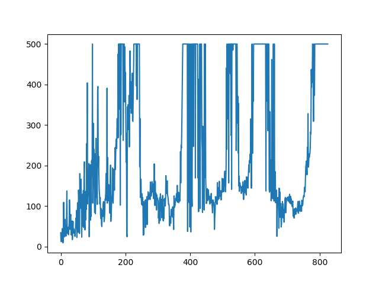
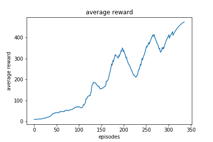
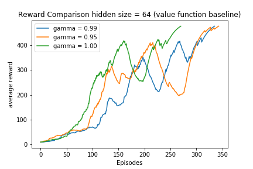
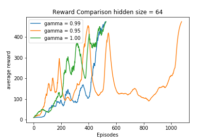

Table of Contents
1. Vanilla policy gradient
1.1. With normalized reward on Cartpole-v0
1.1.1. Model Info
Linear(4,28)–>Dropout(P = 0.6)–>ReLU()–>Linear(128, 2)–>Functional.Softmax
1.1.2. Parameters
- gamma = 0.99
- running reward step = 0 .5
1.1.3. Episode Reward Plots
- x axis length is till the final episode of learning. Normalized returns make the learning faster
- Normalized Returns with gamma 0.99(No to be confused with reward r, its Gt)

- Without Normalized Returns with gamma 0.99

- Normalized returns with gamma 0.95

- Normalized returns with gamma 1.0
1.1.4. Some findings
- policy gradient performance is highly dependent on the random seed, no consistency in number of episodes, sometimes it takes a lot of episodes to learn
2. Vanilla policy gradient with learned value function as baseline
- With value function as baseline the policy gradient learns much faster and is consistent between different independent runs as compared to normalized returns here are some plots:
3. plots
- following plot with gamma = 0.99 shows the learning ends around 350 episodes as compared to the 500-600 episode without baseline

- following plot compares learning with different gammas notice that learning is much more stable and ends consistently for policy gradient with value function baseline for different discount factors(gammas)
 